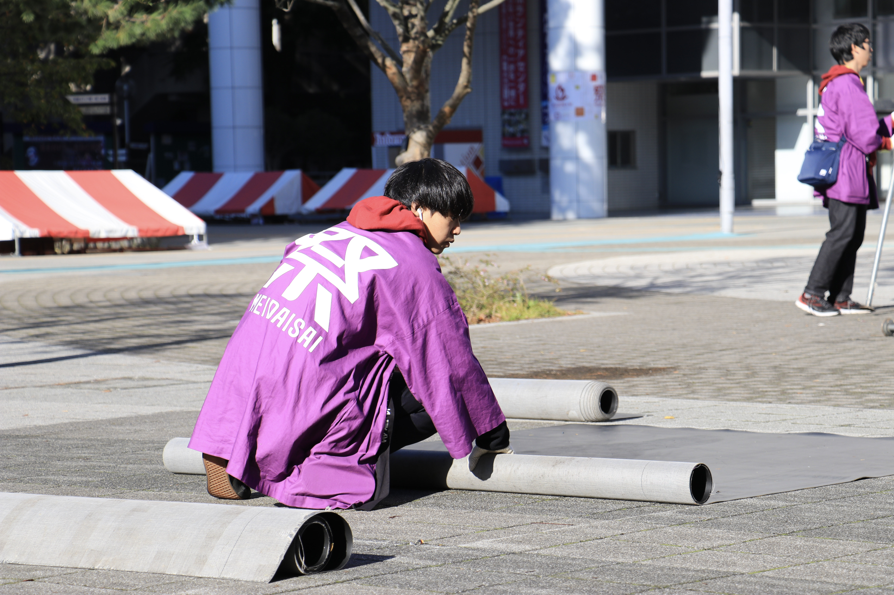
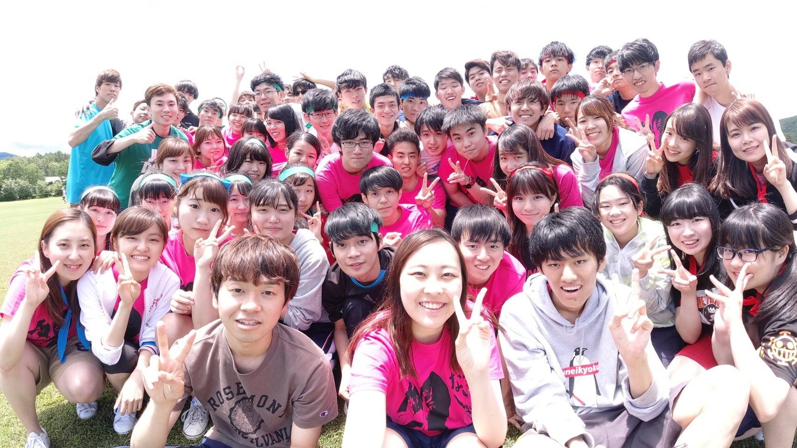

運営局紹介

運営局の役割
運営局は明大祭当日の環境を整え、祭の土台を築いている局です。ヒト・モノ・インフラの3視点に着目し、より過ごしやすい環境を提供するために活動しています。多くの時間を掛けて準備してきたものを当日肌で感じることができるので、学園祭の準備・当日・片付けの隅から隅まで楽しみたい方におすすめです！
運営局の活動内容
運営局では当日のキャンパスを彩るために“キャンパスデザイン”というものを考案していきます。キャンパス全体のマップを置く場所を決めたり、案内装飾としてポスターをデザインしたりなど、明大祭の環境を整えるために多くのことを局会議で話し合い決定します。ここで決めたものが当日に目に見える形となって現れます！
運営局の会議日
局会議：毎週火曜日19:00～（予定）
部門会議：週1回（曜日は未定）
レクの様子

※2019年度の様子です。
運営局は実行委員会内で所属メンバーが特に多い局なので、たくさん友達ができます！多種多様な人が集まるので気の合う友だち達がきっとできるはずです！！
毎年、イベントやレクリエーションを多数開催しています。新しく入ってくれるみなさんとたくさん関わりたいと思っているのでよろしくお願いします！